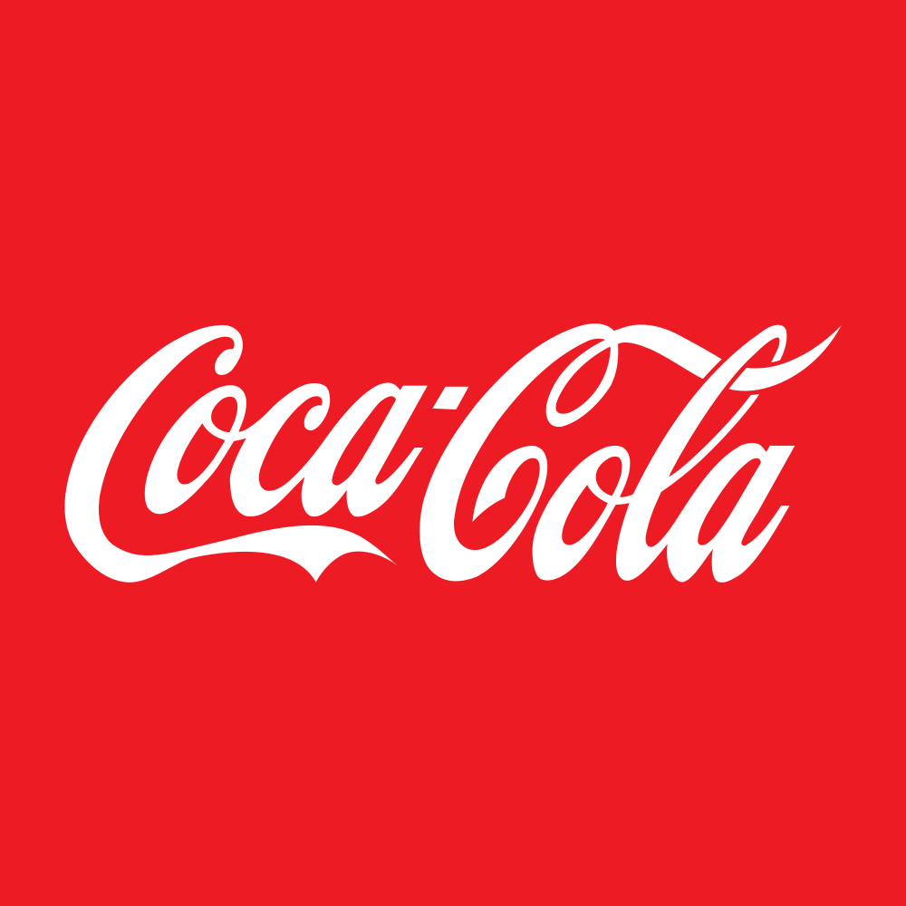

March 28, 2025 at 12:00 AM
Complete analysis with Z-Score + Market Intelligence

3.75
Safe
original
100.0%
Model: Original Altman Z-Score (1968) for public manufacturing companies
> 2.99
1.81 - 2.99
< 1.81
$69.63
$299.7B
28.0
N/A%
20.0%
41.4
hold
N/A
-4.0/10
sideways
-0.83%
0.01%
-2.3%
1.9%
13.1%
N/A%
0.07
0.49
-15.5%
2.7/10
0.0233
0.7589
0.0360
4.052
0.3543
0.1094
3.750
Investment Analysis Narrative: The Coca-Cola Company (Ticker: KO)
Analysis Date: March 28, 2025
The Coca-Cola Company (KO) presents a compelling investment opportunity characterized by robust financial health and a strong market position. With an Altman Z-Score of 3.75, KO is firmly in the "Safe" category, indicating low bankruptcy risk and financial stability. Coupled with a market recommendation of "strong buy" at a 70% confidence level, KO offers investors a balanced blend of safety and growth potential amid a sideways technical trend.
The Altman Z-Score of 3.75, derived from the original model, signals that KO maintains a very healthy financial profile with minimal risk of distress. This score is supported by several key components:
The company’s total assets stand at approximately $101.7 billion against liabilities of $73.96 billion, reinforcing a strong equity base and balanced capital structure. The near-perfect data quality (1.0% margin of error) further enhances confidence in these metrics.
KO’s market capitalization of $299.7 billion positions it as a dominant player in the global beverage sector. The current share price of $69.63, combined with a P/E ratio of 28.0, suggests that the market values KO’s earnings growth prospects moderately, consistent with a mature, stable company.
Volatility at 20% reflects typical market fluctuations but remains manageable for long-term investors. The Relative Strength Index (RSI) at 41.4 indicates that KO is neither overbought nor oversold, aligning with the observed sideways technical trend. This suggests a consolidation phase, potentially setting the stage for future upward momentum.
The "strong buy" recommendation with 70% confidence underscores market optimism about KO’s growth trajectory, supported by its resilient brand portfolio, global distribution network, and ongoing innovation in product offerings.
KO’s financial robustness and market stature make it an attractive investment for growth-oriented investors seeking stability. The Altman Z-Score’s confirmation of low bankruptcy risk provides a solid foundation for confidence in KO’s long-term viability.
Investment Implications:
- Capital Preservation with Growth Potential: KO’s safe financial profile reduces downside risk, making it suitable for conservative portfolios seeking steady appreciation.
- Valuation Justification: The P/E ratio reflects reasonable expectations for earnings growth, supported by KO’s ability to innovate and expand in emerging markets.
- Market Timing: The current sideways trend and neutral RSI suggest a potential entry point before a possible breakout, offering an opportunity to accumulate shares at a fair price.
Recommended Actions:
- Initiate or increase positions in KO to capitalize on its stable fundamentals and market confidence.
- Monitor quarterly earnings and cash flow statements to ensure continued operational efficiency and profitability.
- Watch for shifts in technical indicators that may signal trend reversals or momentum changes.
While KO’s outlook is positive, investors should remain vigilant regarding the following factors:
Monitoring Recommendations:
- Track changes in working capital and retained earnings to detect early signs of financial stress.
- Follow market trends and technical indicators closely to optimize entry and exit points.
- Stay informed on industry innovations and consumer preferences that could influence KO’s growth trajectory.
The Coca-Cola Company stands out as a financially sound and strategically positioned investment with a strong safety margin and promising growth prospects. Its Altman Z-Score of 3.75 confirms a low risk of financial distress, while market indicators and analyst confidence support a "strong buy" stance. Investors seeking a blend of stability and growth should consider KO a core holding, with attention to evolving market dynamics and operational performance to maximize returns.